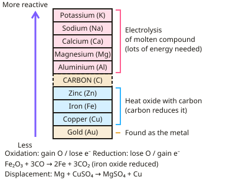

GCSE Chemistry · Topic 4
Chemical changes
Chemical changes covers some of the most important reactions in chemistry: metals reacting, acids and alkalis, and electrolysis.
We will use the reactivity series to explain displacement and metal extraction, describe oxidation and reduction in terms of oxygen and electrons, and compare strong and weak acids.
Then we work through the required practicals on making a salt, titration and electrolysis, plus solubility rules and precipitation.
- 8 subtopics
- 336 questions
- Free: 4.1 notes and 10 questions
In this topic
- 4.1Reactivity of metals and extractionFree below · 25 questions
- 4.2Acids, bases and electrolysisOpen in Full Marks · 37 questions
- 4.3Oxidation and reduction (redox) in terms of oxygen, electrons and displacementOpen in Full Marks · 59 questions
- 4.4Strong and weak acids, pH and hydrogen ion concentrationOpen in Full Marks · 51 questions
- 4.5Solubility rules and precipitation reactionsOpen in Full Marks · 21 questions
- 4.6Required practical: preparing a pure, dry sample of a soluble saltOpen in Full Marks · 21 questions
- 4.7Required practical: acid–alkali titration and titration calculationsOpen in Full Marks · 58 questions
- 4.8Required practical: electrolysis of aqueous solutionsOpen in Full Marks · 64 questions
4.1 · Free notes
Reactivity of metals and extraction

Key points
- The reactivity series ranks metals by how readily they lose electrons to form positive ions; more reactive metals react more vigorously with water and acids.
- A more reactive metal can displace a less reactive metal from a compound in a displacement reaction.
- Oxidation is the gain of oxygen or loss of electrons; reduction is the loss of oxygen or gain of electrons.
- Metals less reactive than carbon are extracted from their oxides by reduction with carbon; metals more reactive than carbon (e.g. aluminium, potassium) are extracted by electrolysis.
- Unreactive metals such as gold are found in the Earth as the metal itself, since they don't readily form compounds.
In more detail
- Reactivity series (most to least): potassium, sodium, lithium, calcium, magnesium, (carbon), zinc, iron, (hydrogen), copper, silver, gold.
- Reactions with water and acid: potassium, sodium and lithium react with cold water; magnesium, zinc and iron react with dilute acid; copper does not react with dilute acids.
- Extraction of iron: in the blast furnace, carbon monoxide reduces iron(III) oxide: Fe₂O₃ + 3CO → 2Fe + 3CO₂.
- Biological methods (higher): phytomining uses plants to absorb metal compounds from soil, then the plants are burned; bioleaching uses bacteria to make leachate solutions containing metal compounds.
Practice
Reactivity of metals and extraction: 10 questions
Pick an answer to check it, or open the answer for the explanation.
1. Which best describes reduction?
- Gain of oxygen
- Loss of oxygen or gain of electrons
- Loss of electrons only
- Loss of a metal
Show answer
B: Loss of oxygen or gain of electrons. Reduction is the loss of oxygen or the gain of electrons.
2. Which method is used to extract metals more reactive than carbon?
- Heating in air
- Reduction with carbon
- Electrolysis
- Displacement
Show answer
C: Electrolysis. A large amount of energy is needed to force these reactive metals out of their compounds.
3. In a displacement reaction, what happens?
- A more reactive metal takes the place of a less reactive metal in a compound
- Two non-metals react
- No reaction occurs
- Only gases are produced
Show answer
A: A more reactive metal takes the place of a less reactive metal in a compound. The more reactive metal forms a compound, releasing the less reactive one.
4. Why is gold found as the native metal in the Earth?
- It is very reactive
- It is very unreactive
- It reacts with carbon easily
- It is a non-metal
Show answer
B: It is very unreactive. Unreactive metals don't readily form compounds with other elements.
5. Which metal is extracted by reduction with carbon rather than electrolysis?
- Potassium
- Aluminium
- Iron
- Sodium
Show answer
C: Iron. Iron is less reactive than carbon, so carbon can reduce iron oxide.
6. Which gas is tested for using a lit splint that gives a squeaky pop?
- Oxygen
- Carbon dioxide
- Hydrogen
- Chlorine
Show answer
C: Hydrogen. This is the standard test for hydrogen.
7. Magnesium ribbon is added to blue copper(II) sulfate solution. What is observed?
- Grey solid forms and the solution stays blue
- Brown solid forms and the blue colour fades
- Hydrogen bubbles form and the solution turns green
- No change, as magnesium is less reactive than copper
Show answer
B: Brown solid forms and the blue colour fades. Magnesium is more reactive than copper so it displaces it. Brown copper metal forms and the blue Cu²⁺ ions are used up, so the blue colour fades.
8. Zinc powder is added to magnesium sulfate solution. What happens?
- The solution turns blue
- Hydrogen gas is given off
- No reaction, as zinc is less reactive than magnesium
- Zinc displaces magnesium, forming zinc sulfate
Show answer
C: No reaction, as zinc is less reactive than magnesium. A metal can only displace a less reactive metal from its compound. Zinc is less reactive than magnesium, so nothing happens.
9. Which half-equation shows oxidation?
- Mg → Mg²⁺ + 2e⁻
- 2H⁺ + 2e⁻ → H₂
- Cu²⁺ + 2e⁻ → Cu
- O₂ + 4e⁻ → 2O²⁻
Show answer
A: Mg → Mg²⁺ + 2e⁻. Oxidation is loss of electrons, and Mg loses 2 electrons. In the other three equations electrons are gained, so they are reductions.
10. In Fe₂O₃ + 3CO → 2Fe + 3CO₂, which substance is reduced?
- Iron
- Carbon monoxide
- Carbon dioxide
- Iron(III) oxide
Show answer
D: Iron(III) oxide. Fe₂O₃ loses oxygen, so it is reduced. CO gains oxygen to form CO₂, so it is oxidised.
Keep going in Full Marks
Full Marks has 25 questions on Reactivity of metals and extraction (15 more than here), set out in practice levels. You also get notes and 3D models for all 8 subtopics of Chemical changes, plus games, timed exams and past papers.
On your exam board
- AQATopic 4: Chemical changes
- OCR ATopic C3: Chemical reactions, Topic C4: Predicting and identifying reactions and products, Topic C5: Monitoring and controlling chemical reactions
- OCR BTopic C3: Chemicals of the natural environment, Topic C5: Chemical analysis, Topic C6: Making useful chemicals
- EdexcelTopic 3: Chemical changes, Topic 4: Extracting metals and equilibria, Topic 5: Separate chemistry 1
- CambridgeTopic 3: Stoichiometry, Topic 4: Electrochemistry, Topic 6: Chemical reactions, Topic 7: Acids, bases and salts, Topic 9: Metals